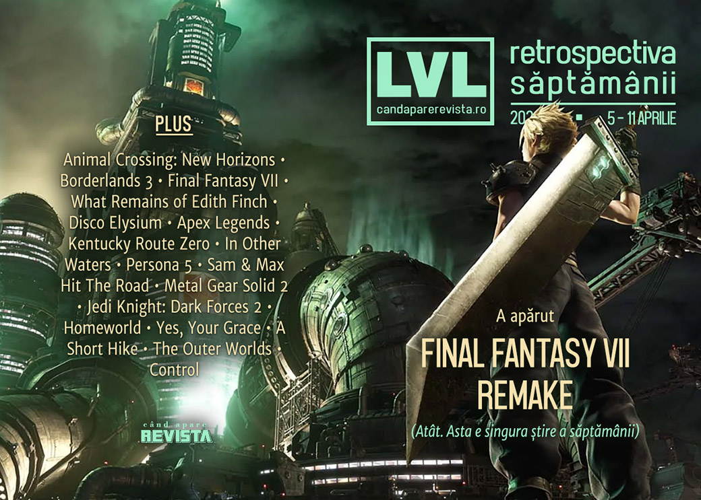

Retrospectiva săptămânii 5 - 11 aprilie 2020
În afară de faptul că s-a lansat remake-ul Final Fantasy VII, Sony a prezentat noul controller pentru PlayStation 5, iar Microsoft și-a mutat toate evenimentele în sfera digitală până vara anului viitor, a fost o săptămână perfect neremarcabilă. Dar aveți ce citi și ce juca, așa că stați în casă.
Linkuri rapide:

Știri
- Sony a prezentat noul controller DualSense pentru PlayStation 5. (Kotaku, Eurogamer, Ars Technica, GamesIndustry.biz)
- ESA renunță și la ideea unei ediții digitale a E3 2020. (Destructoid)
- Microsoft anunță că toate evenimentele sale vor fi events will be “digital-first” until August 2021 (GamesIndustry.biz, The Verge)
- China interzice vânzările jocului Animal Crossing: New Horizons după ce a fost folosit de protestatarii din Hong Kong pentru a afișa mesaje anti-guvernamentale. (Eurogamer, Nintendo Life)
Alte evenimente
- Everything Shown During Today's Inside Xbox (Kotaku)
- Indie Obscura IOX Virtual Event recap: All 21 games featured (Shacknews)
Articole (critică, dev, design)
- Playing Borderlands 3 Can Help Scientists With Actual Research (Kotaku)
- Remaking the Past: Final Fantasy VII and the Psychology of Nostalgia (EGM)
- Inside gaming’s least safe safe rooms (Eurogamer)
- What It's Like When Gaming Helps You Get Sober (Vice)
- As Traditional Sports Grind to a Halt, Esports Offer a Way to Fill the Void (Variety)
- The beautiful game: the studios redefining football (Wireframe)
- Gaming in the Time of Coronavirus Fuels the Social Aspect There All Along (Fanbyte)
- The old-fashioned joys of journalling, and the modern comfort of maps (Eurogamer)
Actualitate
- Sony’s new DualSense controller is its most exciting design since the original PlayStation (The Verge)
Not-a-review
- Disco Elysium is an unexpected hit in China, thanks to a new translation (PC Gamer)
- Why Apex Legends has kept me playing for 500 hours (The Guardian)
- Playing with Loss in Kentucky Route Zero (Sidequest)
- In Other Waters Feeds My Dream of Meeting Europa's Alien Life (USgamer)
- How Persona 5 Told a Classic Crime Story With a Metaphysical Twist (Fanbyte)
- (spoilers) What Remains of Edith Finch Is One of Gaming’s Most Beautiful Tragedies (Escapist)
Industrie
- Nintendo says "more systems on the way" as Switch sells out worldwide (GamesIndustry.biz)
- The coronavirus pandemic is putting indie developers in an even tougher spot (PC Gamer)
- COVID-19: The state of the games industry (GamesIndustry.biz)
- The industry mines for ‘90s nostalgia (GamesIndustry.biz)
- What does a year without events mean for indies? (GamesIndustry.biz)
- Getting the hate out of games (GamesIndustry.biz)
Istorie, retrospectivă
- Sam & Max Hit The Road is a sparkling gem that no longer fits into modern settings (RPS)
- Metal Gear Solid 2 Retrospective: Be Careful What You Wish For (Kotaku)
- The Metal Gear Solid Novelization is a Modern Classic (Fanbyte)
- How archivists and fans saved a long-lost Jak & Daxter Flash game from obscurity (PC Gamer)
- Jedi Knight: Dark Forces 2 can still swing with the best of them (PC Gamer)
- In Midgar’s Shadow (EGM)
- After a Year of Tall Tales, Sea of Thieves Has Reimagined Video Game Storytelling (Escapist)
Dev, making of, mecanici
- War Stories: How Homeworld brought the third dimension to real-time strategy (Ars Technica)
- Redesigning Midgar, Final Fantasy VII Remake’s gritty cyberpunk metropolis (The Verge)
- Deep Dive: The subtle art of building tension in Yes, Your Grace (Gamasutra)
- Video: A postmortem look at the making of A Short Hike (Gamasutra)
- The Outer Worlds: From Concept to Creation Documentary (DSOGaming)
Design, world-building, artă
- Bizarre Brutalism (Unwinnable)
Anunţuri şi lansări de jocuri
Anunţate
- Ponpu, un „bomberman” cu rațe (Destructoid)
- Company of Crime (DSOGaming)
- Vampire: The Masquerade: Shadows of New York, un visual novel conectat cu Coteries of New York (Destructoid)
- Cannibal, continuarea în format joc video a infamului film din 1980, Cannibal Holocaust (Destructoid)
- Dordogne (Destructoid)
Acum cu dată de lansare
Amânate
- New World: 25 august în loc de luna mai (VideoGamesChronicle)
Lansate
- 7 aprilie: Disaster Report 4: Summer Memories (Steam)
- 9 aprilie: Gunbrick: Reloaded (Steam)
- 9 aprilie: Ancient Enemy (Steam)
- 9 aprilie: The Procession to Calvary (Steam)
- 9 aprilie: Plebby Quest: The Crusades (Steam)
- 10 aprilie: Alder’s Blood (Steam, gog.com)
- 10 aprilie: Final Fantasy VII Remake (PlayStation Store)
Prăvălii de jocuri
Articole
- Ars analysis: ~80% of Steam games earn under $5K in first two weeks (Ars Technica)
- Data Deep Dive: How are new releases on Steam performing? (Steam Community)
Update catalog
- Marvel’s Spider-Man and Just Cause 4 join PlayStation Now (EGM)
- Xbox Game Pass for PC is getting five new games, including Overcooked 2 (PC Gamer)
Jocuri gratis și free weekends
- Stadia Pro is currently free for two months (Eurogamer)
- The Crew 2 is free to play on UPLAY until April 13th (DSOGaming)
- Sherlock Holmes Crimes and Punishments and Close to the Sun are free on PC (EGM)
- Pick up a bunch of Star Control games cheap in the Humble Stardock Bundle (PC Gamer)
- We Went Back Is a Terrifying Time Loop You Can Experience for Free (Escapist)
- Free game Happy’s Humble Burger Barn is really freaking me out (PC Gamer)
- Assassin's Creed 2 will be free to own on UPLAY on April 14th (DSOGaming)
Reduceri și promoții
- Indie devs launch Go Play Inside Steam bundle featuring Dead Cells, Celeste, & more (Shacknews)
- Weekend PC Download Deals for Apr. 10: Free Hitman Steam weekend (Shacknews)
- Weekend Console Download Deals for Apr. 10: Spring Sales continue (Shacknews)
Retrospectiva săptămânii este rubrica duminicală în care trecem în revistă evenimentele săptămânii de pe frontul de gaming: știri şi articole (scrise de alții, bineînțeles, că e mai ușor aşa), industrie, lansări, oferte de jocuri, toate numai de savurat la cafeaua de duminică dimineața.
De asemenea, rubrica e deschisă oricui vrea și poate contribui. Dacă ai citit vreun articol sau vreo știre interesantă și crezi că merită incluse în retrospectiva săptămânii, te așteptăm pe forum pe unul dintre topicurile dedicate: Știri, Articole, Gaming România].